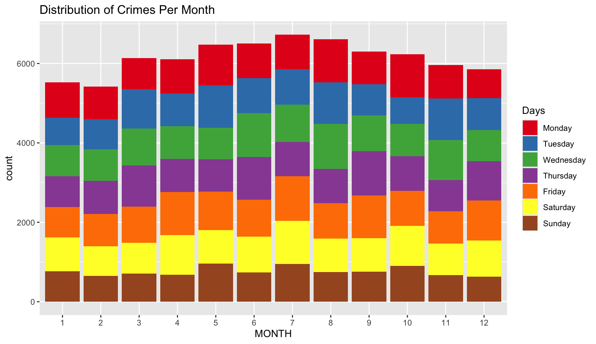

I have chosen to complete my EDA on the crime in Boston in the year 2022. The dataset I found gives the type of crime committed, the date and time of the crime, and the location. There are multiple other variables but those were the ones I focused on the most.
Souce of Data: 2022 Boston Crime
The dataset was collected in 2022 by the Boston Police Department. Reports include variables such as location, type of crime, time, and police district. The potential biases are only reported crimes are in the list, some of the reports have missing values, and each district may have different standards of reporting.
This visualization shows the crimes per month color coded by day of the week.
My three testable hypothesese are 1. Is there a relationship between the day of the week the crime is committed and the time of year? 2. Is there a relationship between the district and amount of crime? 3. Is there a relationship between the district and type of crime committed? The data led me to these questions because of the spots on the map that have an extremely high crime rate. I am also wondering if certain districts have a higher rate of crime because of what is located in that district. For instance will a district with more stores have higher shoplifting?